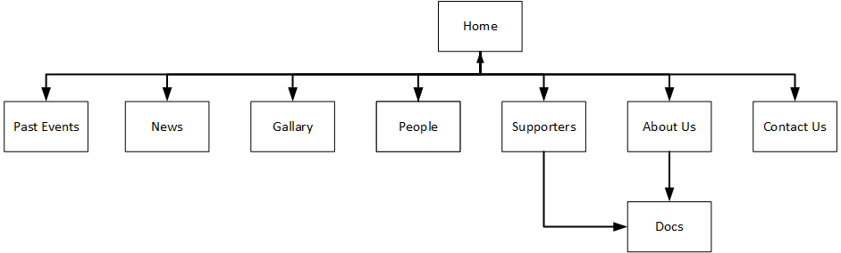

CP1406 - Assignment 2 - Project Plan - Barrier Reef Orchestra
Name: Anthony Bradshaw Login: jc304620
Name: Fionnebharr Harkin Login:
Name: Wesley Mathew Login:
Mission
- To increase applications from North Quensland musicians to join the orchestra
- To advertise upcoming events to increase support from music lovers
- To showcase our star musicians so fans can learn about them
- To increase numbers of Benefactors, Donations and Sponsors
Success Evaluation
- Monitor number of musician's applications and their locations
- Monitor event enquiries and ticket sales
- Monitor hits and duration on star musician's pages
- Monitor Benefactor, Donation and Sponsor growth
Target Audience
- Music lovers, their friends and family across North Queensland
- People who may soon be music lovers
- Ages - 12 to mature
Site Flowchart (Structure Diagram)

GitHub Repository
Group Github Link